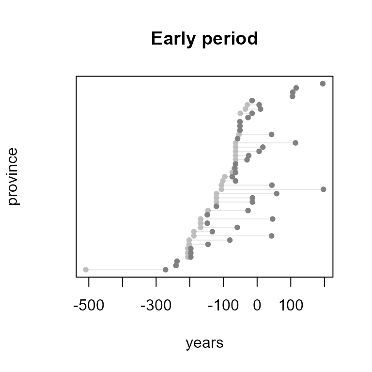
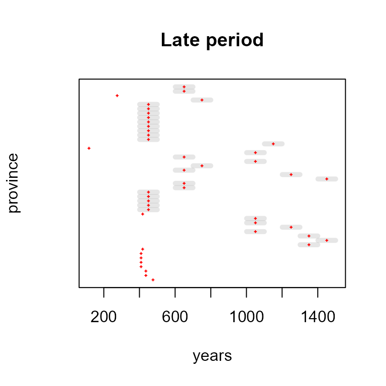

"sdam"
vignettes/Dates.Rmd
Dates.RmdInstall and load a version of "sdam" package.
install.packages("sdam") # from CRAN
devtools::install_github("sdam-au/sdam") # development version
devtools::install_github("mplex/cedhar", subdir="pkg/sdam") # legacy version R 3.6.x
# load and check versions
library(sdam)
packageVersion("sdam")[1] '1.1.1'Temporal data is significant when it comes to analysing the history of archaeological artefacts like written markers from the Ancient Mediterranean. In the EDH dataset, for example, dates for inscriptions are plausible timespans of existence with the endpoints in variables not_before and not_after that, from the perspective of the timespan, are the terminus ante quem (TAQ) and terminus post quem (TPQ) of the time segment. However, not all inscriptions have these two variables filled by domain experts and replacing missing dating data constitutes a challenge.
Besides EDH, other datasets with "sdam" the package and related functions involve dating data in the ancient Mediterranean like displaying dates and time segments in a plot, by organising dates within Roman provinces, and by performed imputation techniques for missing dating data.
An example of plotting dates is with the Shipwrecks external dataset, which is a semicolon separated file of different variables.
References for shipwrecks data are in
"sdam" package
When reading the shipwrecks external dataset with read.csv make sure to use the right separator in sep and leave untouched the names of the variables.
# load shipwrecks external dataset
sw <- system.file("extdata","StraussShipwrecks.csv",package="sdam") |>
read.csv(sep=";", check.names=FALSE)
# variables in shipwrecks dataset
colnames(sw) [1] "Wreck ID" "Strauss ID" "Name"
[4] "Parker Number" "Sea area" "Country"
[7] "Region" "Latitude" "Longitude"
[10] "Min depth" "Max depth" "Depth"
[13] "Period" "Dating" "Earliest date"
[16] "Latest date" "Date range" "Mid point of date range"
[19] "Probability" "Place of origin" "Place of destination"
[22] "Reference" "Comments" "Amphorae"
[25] "Marble" "Columns etc" "Sarcophagi"
[28] "Blocks" "Marble type" "Other cargo"
[31] "Hull remains" "Shipboard paraphernalia" "Ship equipment"
[34] "Estimated tonnage" "Amphora type" Plot the time segments with function plot.dates() and a customized 'id' where variables 15 to 16 in sw have timespans of existence as 'taq' and 'tpq'.
# shipwrecks dates with Wreck ID
plot.dates(sw, id="Wreck ID", type="rg", taq="Earliest date", tpq="Latest date", col=4)Range of timespans in Shipwrecks dataset
The mid points and range of shipwrecks data are explicitly computed by function prex() with the mp option in the 'type' argument. 'vars' stands for the variables that in this case are TAQ and TPQ, and the 'keep' option allows maintaining the rest of the variables in the output that for prex() with mid points is a data frame.
# add mid points and range to shipwrecks data
prex(sw[c(1,7,15:16)], type="mp", vars=c("Earliest date", "Latest date"), keep=TRUE) |>
tail() Wreck ID Region Earliest date Latest date Mid point Range
1779 9057 Sardinia 50 200 125.0 150
1780 9058 Sardinia 400 500 450.0 100
1781 9059 Sardinia 1000 1500 1250.0 500
1782 9060 Liguria -100 -1 -50.5 99
1783 9061 Sicily 1100 1200 1150.0 100
1784 9063 Calabria 300 500 400.0 200The default 'type' option and chronological phase in prex() are the aoristic sum with a five periods bin or bin5.
Arch Class Hell Rom Byz
202.5187 312.0645 4460.9831 13235.0372 622.2608 For an eight chronological periods bin in the shipwrecks dataset
# aoristic sum shipwrecks 8 bin
prex(sw[c(1,7,15:16)], vars=c("Earliest date", "Latest date"), cp="bin8") Arch Class Hell ERom MRom LRom EByz MByz
202.5187 312.0645 4460.9831 2431.3934 881.8685 1197.9617 101.5077 226.2947 For aoristic sum algorithm, cf. Temporal Uncertainty.
Many functions and datasets in "sdam" are related to temporal information of the Roman world, particularly from the Roman Empire during the classical ancient period.
Function plot.map() is to depict cartographical maps per Roman province or region, and it has a 'date' argument to display dates within the caption. Dates in this case are one or two years either for the consolidation of the Italian peninsula or the affiliation of the region to the Roman Empire.
# silhouette of Italian peninsula
plot.map(x="Ita", date=TRUE)
## not runrpmcd has the shapes and colours used in the cartographical maps with plot.map(), and some dates related to provinces as well. [1] "Ach" "Aeg" "Afr" "AlC" "AlM" "AlP" "Aqu" "Ara" "Arm" "Asi" "Ass" "Bae" "Bel" "BiP" "Bri"
[16] "Cap" "Cil" "Cor" "Cre" "Cyp" "Cyr" "Dac" "Dal" "Epi" "Gal" "GeI" "GeS" "HiC" "Ita" "Iud"
[31] "Lug" "Lus" "LyP" "MaC" "Mak" "MaT" "Mes" "MoI" "MoS" "Nar" "Nor" "PaI" "PaS" "Rae" "Sar"
[46] "Sic" "Syr" "Thr" "Aem" "ApC" "BrL" "Etr" "LaC" "Lig" "Pic" "Sam" "Tra" "Umb" "VeH"The establishment dates of Roman provinces used in the cartographical map captions are in the second component of rpmcd.
$Ach
[1] "27 BC"
$Aeg
[1] "30 BC"
$Afr
[1] "146 BC"
$AlC
[1] "63AD or 58AD"
$AlM
[1] "63AD or 14BC"
$AlP
[1] "63AD or 14BC"A vector of establishment dates in years from the "rpmcd" dataset is recorded in object est that allow making a chronology of the Roman provinces.
# second component in dataset
est <- rpmcd |>
lapply(function (x) x[[2]]) |>
unlist(use.names=FALSE)
est [1] "27 BC" "30 BC" "146 BC" "63AD or 58AD"
[5] "63AD or 14BC" "63AD or 14BC" "51 BC" "105 AD"
[9] "114 AD" "133 BC" "116 AD" "197 BC"
[13] "51 BC" "74BC or 64BC" "43 AD" "17 AD"
[17] "64 BC" "238 BC" "66 BC?" "58 BC -30 BC"
[21] "74 BC" "106 AD" "32BC or 10AD" "148 BC"
[25] "25 BC" "27 BC" "27 BC" "197 BC"
[29] "272 BC" "6 AD" "51 BC" "197 BC"
[33] "43 AD" "42AD or 44AD" "148 BC?" "42 AD or 44 AD"
[37] "116 AD" "6 AD" "6 AD" "121 BC"
[41] "16BC or 15BC" "9AD or 10AD" "9AD or 10AD" "16BC or 15BC"
[45] "238 BC" "241 BC" "64 BC" "46 AD"
[49] "272 BC (Ita cons.)" "272 BC (Ita cons.)" "272 BC (Ita cons.)" "272 BC (Ita cons.)"
[53] "272 BC (Ita cons.)" "272 BC (Ita cons.)" "272 BC (Ita cons.)" "272 BC (Ita cons.)"
[57] "272 BC (Ita cons.)" "272 BC (Ita cons.)" "272 BC (Ita cons.)"The establishment dates of Roman provinces and regions are in vector est, and these dates can become more standard with the function cln() for further processing. This is a cleaning function where, for instance, level 9 removes all content after the first parenthesis in the input while the other levels are for specific needs.
# clean levels are 0-9
cln(est, level=9) [1] "27 BC" "30 BC" "146 BC" "63AD or 58AD" "63AD or 14BC"
[6] "63AD or 14BC" "51 BC" "105 AD" "114 AD" "133 BC"
[11] "116 AD" "197 BC" "51 BC" "74BC or 64BC" "43 AD"
[16] "17 AD" "64 BC" "238 BC" "66 BC" "58 BC-30 BC"
[21] "74 BC" "106 AD" "32BC or 10AD" "148 BC" "25 BC"
[26] "27 BC" "27 BC" "197 BC" "272 BC" "6 AD"
[31] "51 BC" "197 BC" "43 AD" "42AD or 44AD" "148 BC"
[36] "42 AD or 44 AD" "116 AD" "6 AD" "6 AD" "121 BC"
[41] "16BC or 15BC" "9AD or 10AD" "9AD or 10AD" "16BC or 15BC" "238 BC"
[46] "241 BC" "64 BC" "46 AD" "272 BC" "272 BC"
[51] "272 BC" "272 BC" "272 BC" "272 BC" "272 BC"
[56] "272 BC" "272 BC" "272 BC" "272 BC" After this transformation of the data in est, is possible to format dates as numerical data with function dts(), which takes the first value when there are two competing dates in the input; unless the opposite is specified in the 'last' argument.
est 27 BC 30 BC 146 BC 63AD or 58AD 63AD or 14BC 63AD or 14BC
-27 -30 -146 63 63 63
51 BC 105 AD 114 AD 133 BC 116 AD 197 BC
-51 105 114 -133 116 -197
51 BC 74BC or 64BC 43 AD 17 AD 64 BC 238 BC
-51 -74 43 17 -64 -238
66 BC 58 BC-30 BC 74 BC 106 AD 32BC or 10AD 148 BC
-66 -58 -74 106 -32 -148
25 BC 27 BC 27 BC 197 BC 272 BC 6 AD
-25 -27 -27 -197 -272 6
51 BC 197 BC 43 AD 42AD or 44AD 148 BC 42 AD or 44 AD
-51 -197 43 42 -148 42
116 AD 6 AD 6 AD 121 BC 16BC or 15BC 9AD or 10AD
116 6 6 -121 -16 9
9AD or 10AD 16BC or 15BC 238 BC 241 BC 64 BC 46 AD
9 -16 -238 -241 -64 46
272 BC 272 BC 272 BC 272 BC 272 BC 272 BC
-272 -272 -272 -272 -272 -272
272 BC 272 BC 272 BC 272 BC 272 BC
-272 -272 -272 -272 -272 Object est has a chronology for the establishment dates of Mediterranean regions and territories as Roman provinces that corresponds to the provinces in "rpmcd" dataset. The union of the names of provinces and dates of establishment as a Roman province is a data frame object rpde that better displays without the row names.
# Roman province dates of establishement (strings still strings)
rpde <- cbind(names(rpmcd),dts(est)) |>
as.data.frame(stringsAsFactors=FALSE) V1 V2
1 Ach -27
2 Aeg -30
3 Afr -146
4 AlC 63
5 AlM 63
6 AlP 63Because the dates have a numerical format from function dts(), the data frame allows producing a chronology of affiliation dates for the provinces and regions to the Roman Empire by ordering the second variable in rpde.
# order of affiliation of provinces
rpde[order(as.numeric(rpde$V2)),1] [1] "Ita" "Aem" "ApC" "BrL" "Etr" "LaC" "Lig" "Pic" "Sam" "Tra" "Umb" "VeH" "Sic" "Cor" "Sar"
[16] "Bae" "HiC" "Lus" "Epi" "Mak" "Afr" "Asi" "Nar" "BiP" "Cyr" "Cre" "Cil" "Syr" "Cyp" "Aqu"
[31] "Bel" "Lug" "Dal" "Aeg" "Ach" "GeI" "GeS" "Gal" "Nor" "Rae" "Iud" "MoI" "MoS" "PaI" "PaS"
[46] "Cap" "MaC" "MaT" "Bri" "LyP" "Thr" "AlC" "AlM" "AlP" "Ara" "Dac" "Arm" "Ass" "Mes"The regions in the Italian peninsula have the earliest affiliation dates, and Mesopotamia has the latest affiliation date to the Roman Empire.
"rpcp" has influence periods of the Roman Empire.
# list with 45 early and late influence dates provinces
data("rpcp")
# look at data internal structure
str(rpcp)List of 2
$ Early:'data.frame': 45 obs. of 3 variables:
..$ Province: chr [1:45] "Italia (Final Consolidation)" "Sicilia" "Sardinia & Corsica" "Hispania Ulterior (Later Baetica)" ...
..$ EarInf : num [1:45] -509 -241 -238 -206 -206 -206 -202 -202 -188 -188 ...
..$ OffPrv : num [1:45] -272 -241 -238 -197 -197 -197 -146 -81 43 -133 ...
$ Late :'data.frame': 45 obs. of 3 variables:
..$ Province: Factor w/ 45 levels "Achaea","Aegyptus",..: 30 43 42 27 28 26 3 23 32 9 ...
..$ LateInf : num [1:45] 476 436 436 409 409 ...
..$ Fall : num [1:45] 476 436 436 409 409 409 409 418 1400 1500 ...Visualize time intervals of early Roman influence in provinces and regions.
# early influence dates are in first list of 'rpcp'
plot.dates(x=rpcp[[1]], taq="EarInf", tpq="OffPrv", main="Early period", ylab="province")
Time intervals of late Roman influence in provinces and regions depicted with mid points and range interval if longer than one.
# late influence dates are in second list of 'rpcp'
plot.dates(x=rpcp[[2]], type="mp", taq="LateInf", tpq="Fall", lwd=5, col="red",
main="Late period", ylab="province")
rpd has time intervals for "not_before" and "not_after" that corresponds to the dating data in the EDH dataset.
# Roman provinces dates from EDH
data("rpd")
# Rome
summary(rpd$Rom) Min. 1st Qu. Median Mean 3rd Qu. Max.
-301.0 50.0 372.0 330.2 652.2 878.0
# Aegyptus
summary(rpd$Aeg) Min. 1st Qu. Median Mean 3rd Qu. Max.
-71.00 90.25 322.00 286.00 517.75 571.00 These intervals are the basis for a restricted imputation of missing dating data in EDH
Function edhwpd() constructs, for a chosen province, a list of data frames with the components made of its inscriptions related by attribute co-occurrences. The replacement of missing dates occurs in this setting with function rmids() that stand for restricted multiple imputation on data subsets.
An example of restricted multiple imputations is the province of Armenia which has the fewest inscriptions in the EDH dataset. Dataset rpd is a list where each component corresponds to a province and where the component class provides the HD ids of inscriptions.
# Armenia
rpd$Arm[1] 116 114 116 2
attr(,"class")
[1] "HD015521" "HD015524" "HD029916"Imputation from similarities of attribute variables per province and dates is organised with wrapper function edhwpd() having different argument options.
# list with arguments
formals(edhwpd)$x
[1] "EDH"
$vars
$province
$dates
$clean
$...By default, the input data for this function is the EDH dataset and the organisation is based on characteristics of the artefacts in vars.
# characteristics of inscriptions
vars = c("findspot_ancient", "type_of_inscription", "type_of_monument", "language")Function rmids() performs the multiple imputation of missing dating data in EDH by default or in another dataset as input. In the case of Arm, record HD015521 has censored data in dates while the other two records have complete missing dating data.
Warning in edhwpd(vars = vars, province = "Arm"): "x" is for dataset "EDH".max TPQ taken from province.avg len TS taken from province.avg taken from province.min TAQ taken from province.max TPQ taken from province.avg len TS taken from province.[[1]]
[[1]][[1]]
[[1]][[1]]$`taq-NA`
id type_of_monument type_of_inscription not_before not_after language
15521.1 HD015521 tabula building/dedicatory inscription 0116 116 Latin
15521.2 HD015521 tabula building/dedicatory inscription 0116 118 Latin
findspot_ancient
15521.1 Artaxata, bei
15521.2 Artaxata, bei
[[1]][[1]]$`NA-NA`
id type_of_monument type_of_inscription not_before not_after language
15524.1 HD015524 stele epitaph 116 116 Latin
15524.2 HD015524 stele epitaph 116 118 Latin
15524.3 HD015524 stele epitaph 114 116 Latin
15524.4 HD015524 stele epitaph 116 116 Latin
findspot_ancient
15524.1 Artaxata, bei
15524.2 Artaxata, bei
15524.3 Artaxata, bei
15524.4 Artaxata, bei
[[2]]
[[2]]$`NA-NA`
id type_of_monument type_of_inscription not_before not_after language
32270.1 HD029916 <NA> <NA> 114 116 Latin
32270.2 HD029916 <NA> <NA> 114 116 Latin
32270.3 HD029916 <NA> <NA> 114 116 Latin
32270.4 HD029916 <NA> <NA> 116 116 Latin
findspot_ancient
32270.1 <NA>
32270.2 <NA>
32270.3 <NA>
32270.4 <NA>
attr(,"class")
[1] EDH Arm 3 9 The warnings tell us that the imputation values are taken from the respective province in the rpd dataset where avg len TS stands for average length of timespan, min TAQ is the minimum value of not_before, and max TPQ is the maximum value of not_after.
Since there are multiple imputations of missing dating data, one next step is to combine the data by pooling rules of the m results from function rmids() into final point estimates plus standard error.
Pooling options for time intervals are take:
avg len TS
min TAQ and max TPQ
max TAQ and min TPQ
With these options, there is a single imputed value per variable with implied consequences.
¨